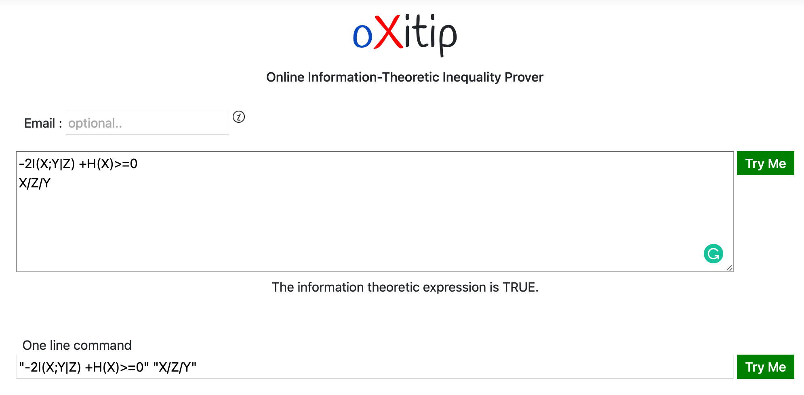

Information Measures in Canonical form
- Information Measures in Canonical form
- Information Measures
- Information Inequalities
- Elemental Information Inequalities
- Canonical Represenation
- Geometry of $\Gamma_{n}^{*}$
- Shannon Type Inequalities
- Non Shannon Type Inequalities
- Linear Programming and Duality principles
- Generating proofs for Shannon Type Inequalities
Information Measures
TBD
Entropy
TBD
Mutual Information
Basic Information Measures
TBD
- Conditional Entropy of the form $H\left(\mathbf{X}_a|\mathbf{X}_{b}\right)$
- Conditional Mutual Information of the form $I\left(\mathbf{X}_a;\mathbf{X}_{b\ne i}|\mathbf{X}_c\right)$
where $a,b,c \subseteq \mathcal{N}_{n}$ and $a,b \ne \emptyset$.
Elemental Information Measures
- Conditional Entropy of the form $H\left(X_i|X_{j\ne i}\right)$
- Conditional Mutual Information of the form $I\left(X_i;X_{j\ne i}|\mathbf{X}_\kappa \subseteq \mathcal{N}_{n}\backslash\{i,j\}\right)$
Properties of IM
Positivity (TBD)
Information Inequalities
$f() \ge 0$ where $f$ is a linear IE (TBD) TBD
Unconstrained Inequalities
Constrained IE
Information Constraints
TBD
- Markov Chain
- Independence of random variables
- Conditional Independence
- Functional Dependency (Related random variables) $Y=fun(X)$
A random variable $Y$ is a mapping from another random variable $X$ (TBD)
- TBD
Constraints can be expressed linear algebraically $Q\mathfak{h} = 0$ where $Q$ is the constraint matrix.
Elemental Information Inequalities
Information Inequalities which belong to any of the following type:
- Conditional Entropy of the form $H\left(X_i|X_{j\ne i}\right)$
- Conditional Mutual Information of the form $I\left(X_i;X_{j\ne i}|\mathbf{X}_\kappa \subseteq \mathcal{N}_{n}\backslash\{i,j\}\right)$
are called Elemental Information Inequalities (EIM). These are entropies of a single random variable or and conditional entropies of a single random variable, conditioned on other random variable or sets of random variables. "
Canonical Represenation
Canonical representation refers to expressing information expression as linear combination of entropies and joint entropies. e.g., $H(X1,X2,...,X_n)$. For every Information Expression one find a unique canonical representation.
Elemental expressions can be decomposed to canonical form as follows:
- $H\left(X_i|\textbf{X}_{\mathcal{N} \backslash \{i\}}\right) = H\left(\textbf{X}_{\mathcal{N}}\right)$
- $I\left(X_i;X_j|\textbf{X}_{\kappa}\right)= H\left(X_i,\textbf{X}_\kappa\right)+H\left(X_j,\textbf{X}_\kappa\right)-H\left(X_i,X_j,\textbf{X}_\kappa\right)-H\left(\textbf{X}_\kappa\right)$
Geometry of $\Gamma_{n}^{*}$
The region $\Gamma_{n}^{*}$ is defined as
$\Gamma_{n}^{*} = \bigcup_{p \in \mathcal{P}} \mathfrak{h}(p)$
where $\mathcal{P}$ is the space of all all probability distributions indued on the random variable space (TBD. Have to define $X_1,\ldots X_n$ and its probability space $\mathcal{X}_1 \ldots \mathcal{X}_{n}$ etc.)
Geometry of $\Gamma_{n}$
$\Gamma_{n}$ is the space encapsulating all entropic points.
$\Gamma_{n} \equiv \left\{\mathbf{h} \in \mathbb{R}^{2^{n}-1} | \mathbf{h} \in \mathbb{B} \right\}$
Examples: Entropic space for $\Gamma_{2}$
This is easy to visualize. The built in function volumeΓ() can be used to generate and then plot the visualization using plotΓ(n).
using InformationInequalities
plotΓ(n=2,points=yes,max=3,color=:gold)Basic concepts
Entropic space for $\Gamma_{2}$

Consider the linear system
\[\mathbf{Ax}=\mathbf{b},\]
TBD the interval linear system by a real matrix $C$ means to multiply both sides of the equation by $C$, obtaining the new system
\[C\mathbf{Ax}=C\mathbf{b},\]
which is called TBD system. Let us denote by $A_c$ the midpoint matrix of $\mathbf{A}$. Popular choices for $C$ are
- Inverse midpoint TBD: $C\approx A_c^{-1}$
- Inverse diagonal TBD: $C\approx D_{A_c}^{-1}$ where $D_{A_c}$ is the diagonal matrix containing the main diagonal of $A_c$.
Shannon Type Inequalities
TBD An Information inequality of the form $f=\mathbf{b}^{\top} \mathfrak{h} \ge 0$, we just need to check $\min_{\mathfrak{h}:G\mathfrak{h} \ge 0} \mathbf{b}^{\top} \mathfrak{h} = 0$ These are effectively encapsulated to the following optimization problem. This can now be solved using Linear Programming techniques (TBD)
The constrained Information Inequality $f=\mathbf{b}^{\top} \mathfrak{h} \ge 0$ with constraint $Q \mathfrak{h} =0$ can be similarly treated under the optimization framework as,
$\underset{\min_{\mathfrak{h}:G\mathfrak{h} \ge 0}}{Q\mathfrak{h}=0} \mathbf{b}^{\top} \mathfrak{h} = 0$
Non Shannon Type Inequalities
Linear Programming and Duality principles
Strong duality
Generating proofs for Shannon Type Inequalities
Lagrange formulation TBD
Example of a proof generation
Note: The showProof has a rendering display problem on GR/HTML and hence git complaints. Fixme!
using InformationInequalities
#A="-3I(X;Y|Z)+2H(X) ≥ 0"
showProof("-3I(X;Y|Z)+2H(X)",Markov(X,Z,Y))!!! Note To use the function showProof first need to make sure that the inequality is a true Shannon Type inequality. At the moment, the internal check for non-Shannon Tuype inequalities is unstable. FixMe. It is advised to do one pass on oXiTIP or AITIP before trying this. In a later version, a seamless integration is likely.

Improve numerical stability
Even if the algorithms theoretically work
TBD: The search space is still double exponential without exploiting any sparsity structure which seems to exisit (TBD).